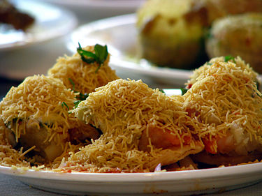

Sev Puri:
Sev puri is an Indian snack and a type of chaat.It is a speciality that originates from Mumbai, Maharashtra.
In Mumbai and Pune, sev puri is strongly associated with street food, but is also served at upscale locations.Recently, supermarkets have started stocking ready-to-eat packets of sev puri and similar snacks like bhelpuri.